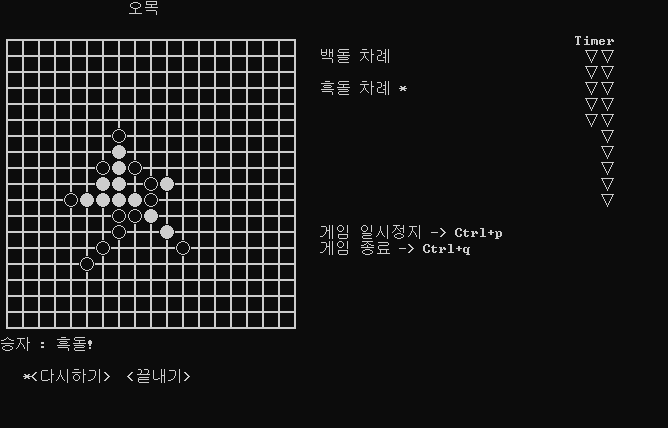

컴공학생A
평범한 컴공생의 블로그
모든 글

C language
[C언어] C언어로 간단한 오목 만들기먼저 게임을 만들기 위해 기본적으로 헤더 파일을 불러와야 합니다. 먼저 게임을 만들기 위해 기본적으로 헤더 파일을 불러와야 합니다.
Windows Batch
[Windows Batch] CMD에서 변수 사용하기(set 명령어)윈도우에는 cmd라는 명령 프롬프트가 존재합니다. cmd에는 다양한 시스템 명령을 사용하여 윈도우에서 발생하는 일부 오류들은 해결할 수도 있습니다.
C language
[C언어] 좌표계-gotoxy()함수cmd 콘솔 환경에서 좌표를 찍기 위해서는 SetConsoleCursorPosition 함수와 COORD 구조체를 필요로 합니다.
C language
[C언어] 실시간 키보드입력 받기 kbhit()함수우리는 C언어에서 사용자로부터 키보드 입력을 받기 위해 scanf() 함수를 사용합니다. 하지만 scanf()는 값을 입력한 후 줄바꿈 문자(엔터키)를 입력해줘야 입력이 됩니다.
Linux Shell Script
[Shell Script] 이것이 우분투 리눅스다. 9장 자동설치 bash 파일 만들기안녕하세요. 이번 글에서는 우재남 저자께서 지으신 "이것이 우분투 리눅다"라는 책의 내용에 관하여 작성하였습니다.
Windows Batch
[Windows Batch] arp를 이용해 사설망 내의 MAC주소 목록 출력하기cmd의 명령어에 arp라는 명령어가 있습니다. arp 명령어를 사용하기 전에 arp에 대해 먼저 알아보겠습니다. 주소 결정 프로토콜